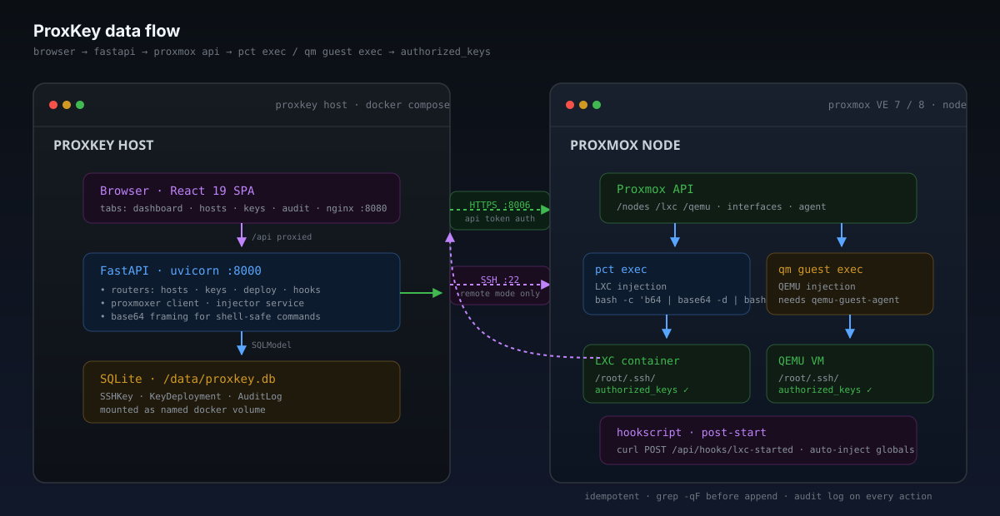

Architecture
One sentence: browser → React UI → FastAPI → Proxmox API
→ pct exec / qm guest exec → guest's
authorized_keys.

In the browser
A single-page React 19 app served by nginx from the frontend container.
Nginx proxies /api to the backend so the SPA only needs one
origin. Four top-level tabs:
- Dashboard — stats cards, host-type breakdown, key-coverage donut, deployment metrics.
- Hosts — the host grid with search, filter, sort, status badges, and per-host SSH copy.
- SSH Keys — the key library with add / edit / delete and fingerprint copy.
- Audit Log — every deploy, revoke, and key CRUD event with timestamp, host, key, and outcome.
Stack: React 19, TypeScript, Vite, Tailwind CSS v4, TanStack Query for data fetching and cache, Zustand for cross-component selection state.
In the backend
FastAPI + SQLModel + proxmoxer. Lifespan creates the DB tables, wires the Proxmox client from the loaded settings, and registers four routers:
hosts.py— discovery, connection probe, per-host key inspection.keys.py— CRUD overSSHKey; fingerprint computed on save.deploy.py— deploy, revoke, dashboard stats, deployment status, audit log.hooks.py— receiver for Proxmox hookscripts so containers can auto-inject at boot.
State lives in a single SQLite database (/data/proxkey.db
inside the container, mounted as a volume). Three tables: the key
library, per-host deployment records, and the audit log.
Host discovery
GET /api/hosts walks the Proxmox API in two passes:
/nodes/{node}/lxcreturns every container with VMID, name, and status./nodes/{node}/qemureturns every VM with the same fields.
For each running host, ProxKey then fetches its IP address:
- LXC →
/nodes/{node}/lxc/{vmid}/interfaces - QEMU →
/nodes/{node}/qemu/{vmid}/agent/network-get-interfaces(needsqemu-guest-agent)
Link-local (fe80::) and loopback addresses are filtered out
before the host card surfaces them. The discovery result is sent down
in one JSON payload — no SSE here, the UI just refetches via
TanStack Query when it needs fresh state.
Injection path
The interesting part. ProxKey can run on the Proxmox node directly or
anywhere with API access. Either way, the wire ends at
pct exec / qm guest exec inside the guest.
Dual execution paths
- On the node: the backend runs
pct exec <vmid> -- bash -c <cmd>via subprocess. No SSH involved. - Remote: the backend wraps that in
sshpass -p $PROXMOX_SSH_PASSWORD ssh root@<node> .... Same command, one extra hop.
Mode is implicit: PROXMOX_SSH_PASSWORD set ⇒ remote
mode. The injector doesn't care which side it's on — both code
paths converge in services/injector.py.
Base64 transport
Injection scripts cross two or three shell boundaries: the
local subprocess, optionally SSH, then pct exec's own
bash -c. To stop quotes and dollars from getting mangled,
the script is base64-encoded and the wire just carries the encoded blob:
SCRIPT_B64="$(base64 -w0 <<'EOF'
mkdir -p /root/.ssh && chmod 700 /root/.ssh
touch /root/.ssh/authorized_keys && chmod 600 /root/.ssh/authorized_keys
grep -qF "$KEY" /root/.ssh/authorized_keys || echo "$KEY" >> /root/.ssh/authorized_keys
EOF
)"
pct exec "$VMID" -- bash -c "echo '$SCRIPT_B64' | base64 -d | bash"
The actual script is short, defensive, and idempotent. The
grep -qF check makes re-deploys safe; the chmod
calls fix permissions on every run rather than assuming the directory
already exists.
Revocation
Same execution model. The revoke script deletes only the matching line
using sed with a fixed-string match, so it can't damage
unrelated entries. Revoking a key that isn't there is a no-op
— the audit log still records the attempt.
Auto-inject on start
A Proxmox hookscript on the node can POST to
/api/hooks/lxc-started in the post-start
phase. ProxKey looks up every key marked as global and
deploys them into the just-started container. Because injection is
idempotent, the hookscript can fire on every start without consequence.
Data model
Three SQLModel tables; everything else is derived.
| Table | Purpose | Notable fields |
|---|---|---|
SSHKey | The key library | label, public_key, fingerprint, is_global |
KeyDeployment | Per-host deploy state | vmid, key_id, deployed_at, status |
AuditLog | Every deploy/revoke/CRUD | action, vmid, key_id, outcome, detail, at |
SQLModel auto-creates the tables on first startup. The file lives at
/data/proxkey.db inside the backend container and is
mounted as a Docker named volume so it survives restarts.
Deployment
Two containers behind a single host port:
- backend —
python:3.11-slimwith the FastAPI app underuvicorn, listening on:8000. - frontend — multi-stage build:
node:20compiles the Vite app, thennginx:alpineserves the static output and proxies/apito the backend.
docker-compose.yml wires them together with a shared
named volume for the SQLite file. Configuration lives entirely in
.env — the images are credential-free.
CI & releases
.github/workflows/build.yml
builds the backend and frontend images for linux/amd64
and linux/arm64, pushes them to GHCR on every push to
main, and on tagged pushes (v*) stitches
per-arch tags into multi-arch manifests and creates a GitHub Release
with the docker-compose.yml attached.
.github/workflows/pages.yml
publishes this static site from docs/ to GitHub Pages on
every push to main.
Known limits
- Single Proxmox cluster per instance — one
PROXMOX_HOST+PROXMOX_NODE. Multi-cluster fan-out is not modeled yet. - QEMU IP + exec require
qemu-guest-agentrunning in the guest. There is no fallback if it isn't. - Remote mode authenticates to the PVE node with a password (
sshpass). Key-based SSH-to-node is on the roadmap. - LXC IP discovery only works after the network stack is up — expect a ~5-second blank window after start.
- Only writes to
/root/.ssh/authorized_keysby default. Per-user injection is planned.